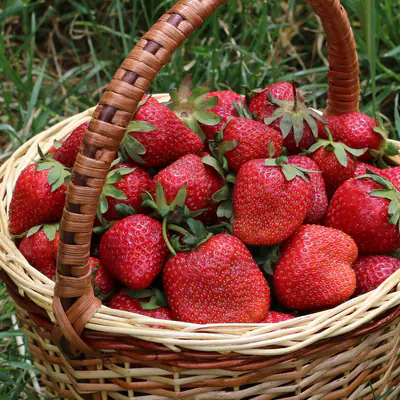
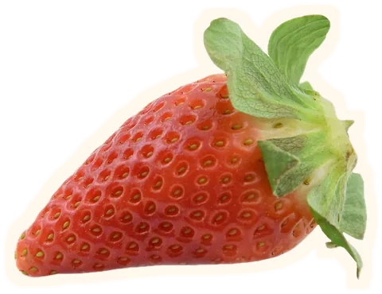
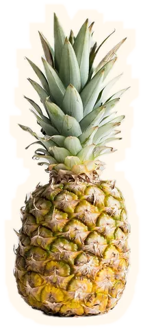
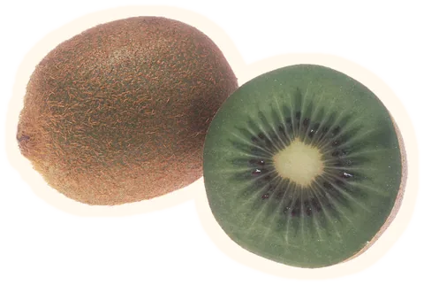
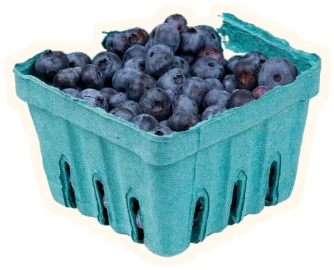
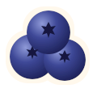
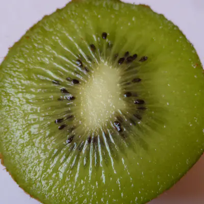
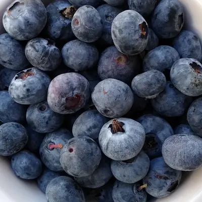

Truskawki
Każda pestka na powierzchni jest osobnym owocem.


Cztery owoce, soczyste kolory i plaster cytrusa narysowany w CSS.



Kiwi,  ananas, truskawki i
ananas, truskawki i

borówki.
Każda pestka na powierzchni jest osobnym owocem.

W tej samej masie ma więcej witaminy C niż pomarańcza.

Roślina rodzi jeden owoc naraz, a jego wzrost trwa ponad rok.

Jasnoniebieski nalot to warstwa wosku. Pod nią borówka jest prawie czarna.
Rozmiar i czas ładowania każdego pliku, zmierzone przez przeglądarkę podczas tej wizyty.
Otwiera repozytorium na GitHubie. Licencja MIT.